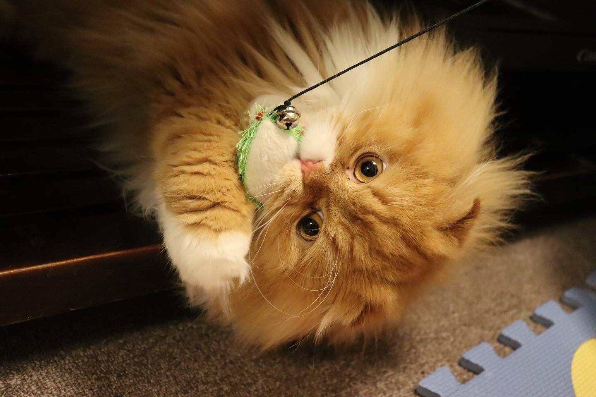
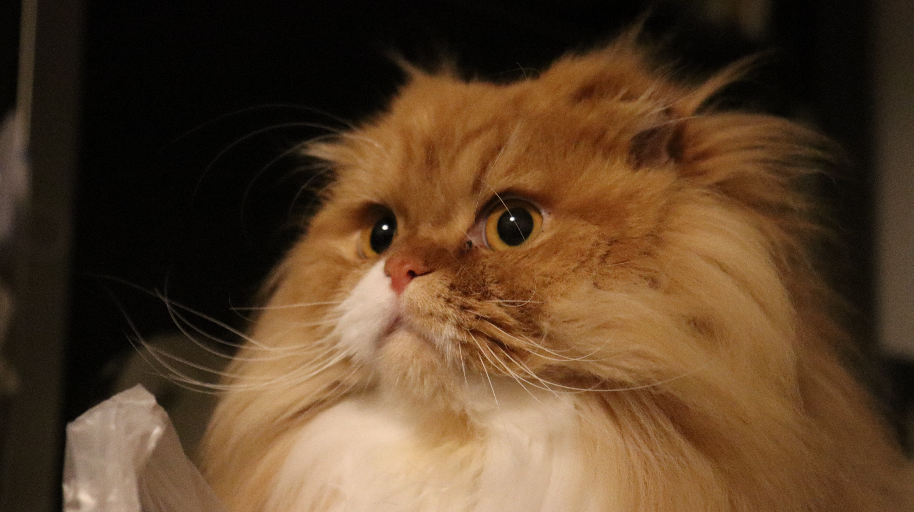
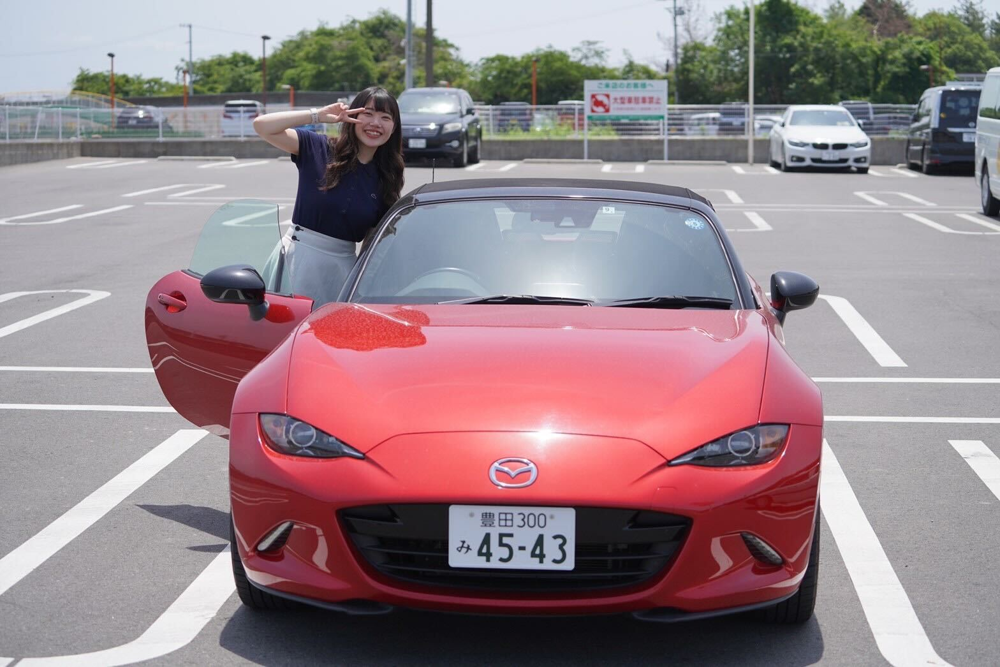
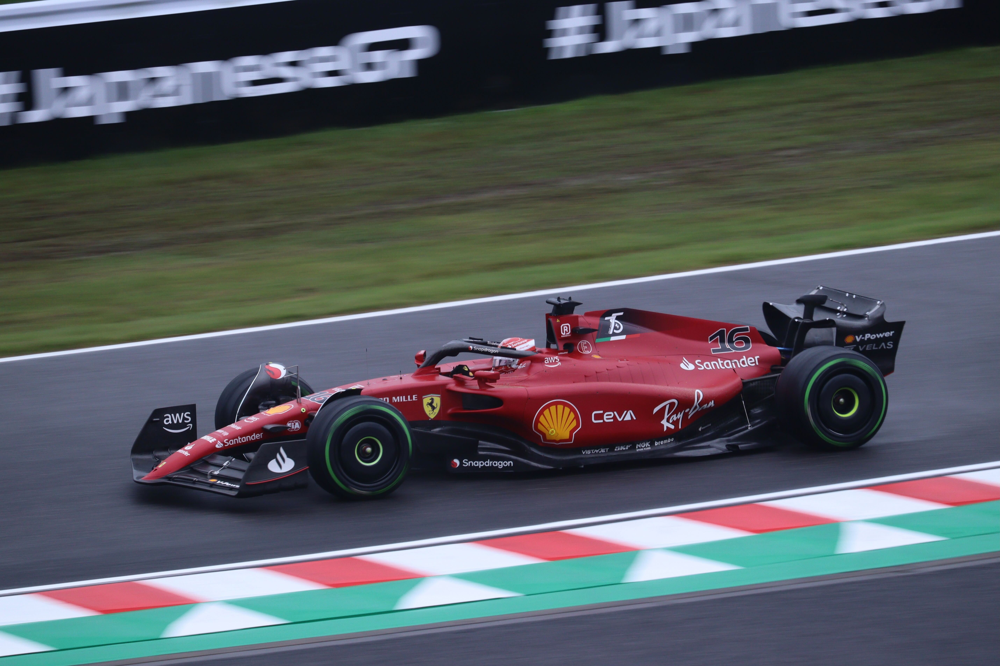
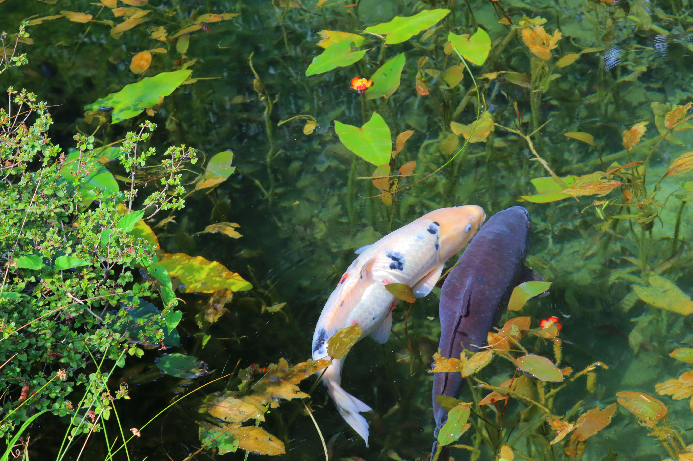

FND18 Final Presentation🤗😂👍
2023.08.02
Mirano Tsukiiwa
💡基礎コースでできるようになったこと
↑ windows key + . key で絵文字が使える…！😳
- HTML, CSSを使ったHP作成
- javascriptを使ったプログラミング
- 自分の好きなアウトプットを出せる
次から順番に説明していきます！
1. HTML, CSSを使ったHP作成
基礎コースを学習して、普段目にするHPの仕組みを学ぶことができた
.htmlの拡張子にコードを書き込んでいくことで作成できること
HTMLが DOCTYPE宣言、head、body の構成から成っていること
タグで細かな指示を出していくこと
要素には Block と Inline の２パターンあること
CSSファイルでHTML要素の見た目を記述できること
etc…
調べると書き方は出てくるけど、そのままじゃうまくいかないことも多々…
コードの仕組みを理解しておくこと、コードを読む力、修正する力は必要！
それを今回の基礎コースで学べました🙌
実際に作成してみたのがこちら👩💻↓↓↓↓↓
自己紹介
名前 : つきいわ みらの
部署 : 塗装成形製造技術部 (プリウスの塗装生準してました！)
猫 : ごろう (チンチラ＆スコティッシュフォールド)
趣味 : ドライブ、F1観戦、カメラ📷
- 
- 
- 
- 


- 
Point--------------------------------------------------------------------
✔ 作りたいものが明確であればあるほど迷わずに最短で作成できる
今回は手探りでいろいろなサイトを参照していろいろできることを学んだ
✔ HTMLに手を出す前に、HPの構成、デザインをしっかり決めておくことが重要と感じた
--------------------------------------------------------------------------